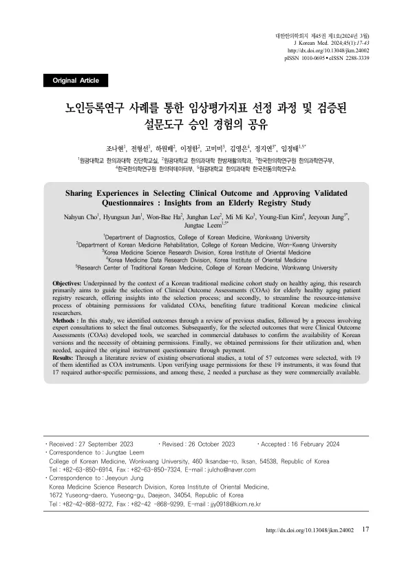

Sharing Experiences in Selecting Clinical Outcome and Approving Validated Questionnaires : Insights from an Elderly Registry Study
Cho N, Jun H, Ha WB, Lee J, Ko MM, Kim YE, Jung J, Leem J
Journal of Korean Medicine 45(1):17-43

첫 장 · 오픈액세스First page · open access
논문 소개Summary
임상연구에서 무엇을 잴 것인가는 결과만큼 중요한데, 그것을 어떻게 골랐는지는 좀처럼 글로 남지 않습니다. 프로토콜 논문에는 최종 목록만 실리고 그 앞의 판단 과정은 사라집니다. 이 논문은 한의 건강노화 코호트를 준비하면서 평가지표를 고르고 사용 허가를 받은 과정을 사례로 삼아, 그 사라지는 단계를 남겨 둔 글입니다.
노인은 장기 추적이 필요하므로 비용과 시간이 많이 드는 무작위 대조시험보다 환자등록 관찰연구가 실현 가능성이 높습니다. 연구진은 먼저 선행 노인 코호트 다섯 건을 훑어 어떤 지표를 쓰고 있는지 보았습니다. 인구학적 정보와 의료 이용, 과거력, 생활습관, 건강 관련 삶의 질이 공통으로 들어 있었고, 노인에게 문제가 되는 신체 수행 능력과 낙상, 우울과 사회적 고립, 인지기능도 함께 있었습니다. 노쇠 평가의 핵심결과지표 세트인 FOCUS와 FAGRO의 구성과도 상당 부분 겹쳤습니다.
그 위에서 세 차례 수정을 거쳐 최종 57개의 평가지표를 정했고 그중 19개가 임상평가지표 도구였습니다. 이 19개의 사용 허가를 확인한 결과 17개가 저작자의 개별 허가를 받아야 했고, 그 가운데 2개는 상용 도구여서 구매해야 했습니다. 한국어 번역본이 이미 공개되어 있거나 공공 도메인이어서 절차가 필요 없는 것도 있었습니다.
저자들이 든 한계는 셋입니다. 허가 정보와 번역본 정보는 2023년 6월 기준이라 이후 저작권이 바뀔 수 있어 확인할 수 있는 출처를 표에 함께 밝혔습니다. 평가지표를 고를 때 체계적 문헌고찰을 수행하지 않고 임상의의 경험과 탐색적 문헌 검토를 종합했으므로 살펴본 선행 연구가 제한적이었습니다. 그리고 문헌 데이터베이스만 검색하고 평가지표 데이터베이스는 검색하지 않았습니다.
작업 중에 확인된 문제 하나가 다음 과제로 남았습니다. 임상평가지표의 한글 번역본 가운데 검증되지 않은 것이나 여러 판본이 도는 것이 있어 후속 연구에 혼란을 일으킬 수 있다는 것입니다. 저자들은 검증된 한글 번역본을 등록하고 허가 연락처까지 제공하는 국내 데이터베이스가 필요하다고 적었습니다.
What a clinical study chooses to measure matters as much as its results, yet how those choices were made is rarely written down. Protocol papers carry the final list; the judgement that preceded it disappears. This paper preserves that vanishing step, taking as its case the selection of outcome measures — and the obtaining of permissions to use them — during preparation of a Korean medicine healthy-ageing cohort.
Because older adults require long follow-up, a patient registry observational study is more feasible than a costly and lengthy randomised trial. The team first surveyed five preceding cohorts of older adults to see what they measured. Demographic information, healthcare use, medical history, lifestyle and health-related quality of life were common to all, together with physical performance, falls, depression and social isolation, and cognitive function. These overlapped substantially with FOCUS and FAGRO, the core outcome sets for assessing frailty.
Building on that, three rounds of revision produced a final set of 57 outcomes, 19 of them formal clinical outcome assessment instruments. Checking permissions for those 19 showed that 17 required author-specific permission, and two of those had to be purchased as commercial instruments. Others needed no procedure at all, having Korean translations already published or being in the public domain.
The authors name three limitations. Permission and translation information was current as of June 2023 and copyright may change, so the table records the sources where it can be re-checked. Outcomes were chosen by combining clinicians' experience with an exploratory literature review rather than a systematic one, so the number of preceding studies examined was limited. And only bibliographic databases were searched, not databases of outcome instruments themselves.
One problem surfaced during the work and remains as a task. Among Korean translations of these instruments, some are unvalidated and some circulate in several versions, which can confuse subsequent research. The authors argue for a domestic database that registers validated Korean translations and supplies the contact details needed to obtain permission.
인용Cite
Cho N, Jun H, Ha WB, Lee J, Ko MM, Kim YE, Jung J, Leem J. Sharing Experiences in Selecting Clinical Outcome and Approving Validated Questionnaires : Insights from an Elderly Registry Study. Journal of Korean Medicine. 2024;45(1):17-43. doi:10.13048/jkm.24002